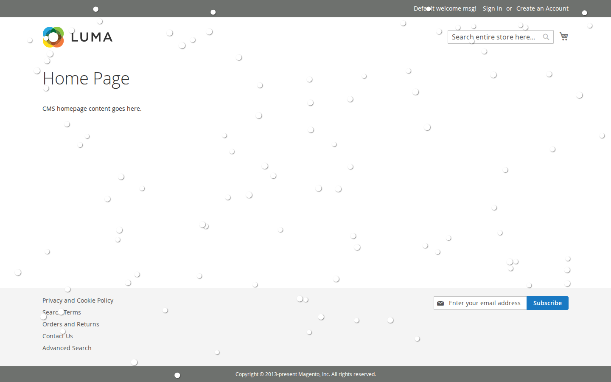
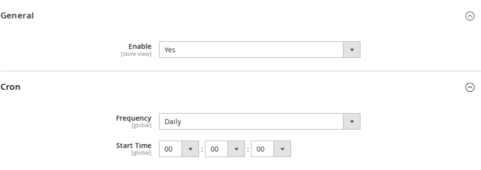
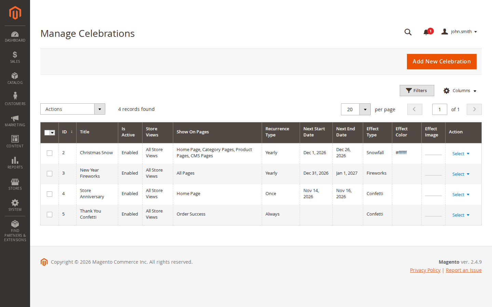
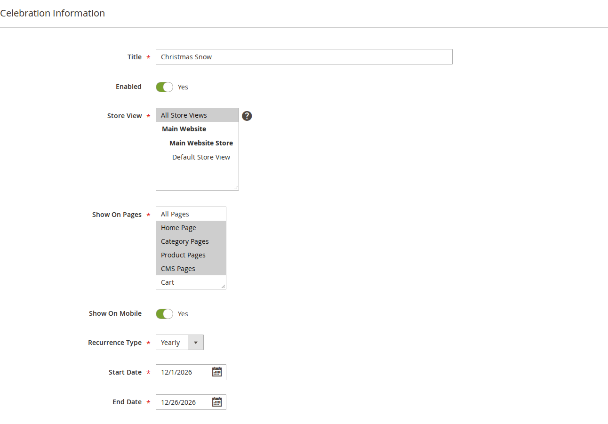
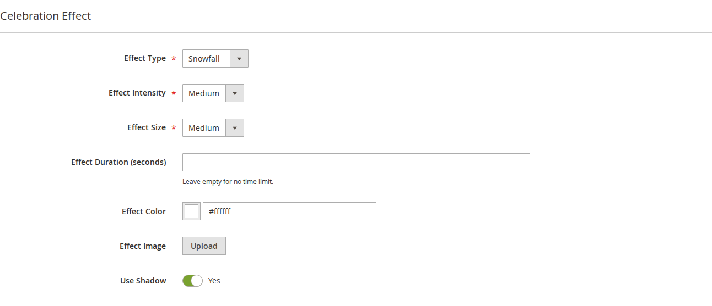
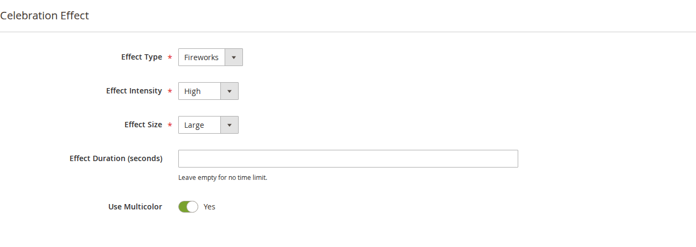
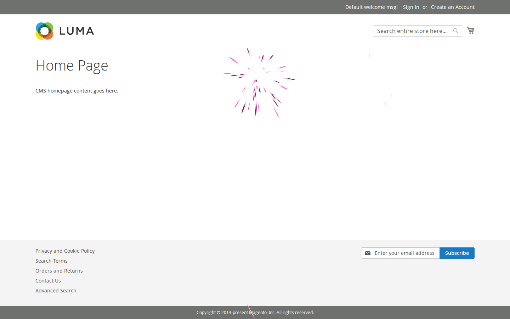
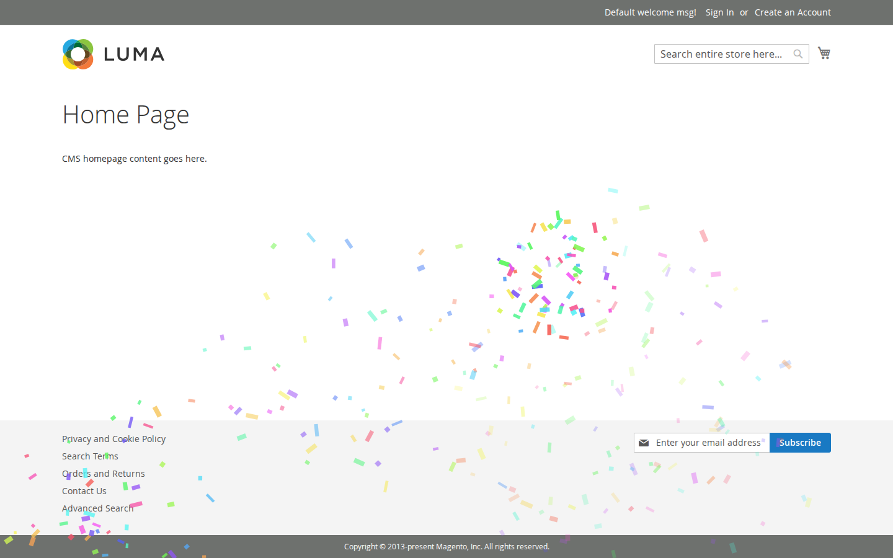

Orca Celebrations adds animated effects to your storefront without changing your theme. You decide which effect runs, when it runs, on which store views and on which pages.
| Magento | Magento Open Source or Adobe Commerce 2.4.7 or later (Mage-OS 1.0 or later) |
|---|---|
| PHP | 8.2, 8.3, 8.4 or 8.5 |
| Theme | Luma or a Luma based theme |
| Cron | Optional. Only used to refresh the next dates shown in the admin grid. |
Back up your code and database and, on a production store, enable maintenance mode before installing.
After purchasing the extension, it is available with your Adobe Commerce Marketplace access keys:
composer require orca/module-celebrations
bin/magento module:enable Orca_Celebrations
bin/magento setup:upgrade
bin/magento setup:di:compile
bin/magento setup:static-content:deploy
bin/magento cache:flushapp/code/Orca/Celebrations in your Magento root.registration.php is located at
app/code/Orca/Celebrations/registration.php.bin/magento commands listed above, from module:enable on.setup:di:compile and setup:static-content:deploy are
optional. In production mode, run bin/magento deploy:mode:set production instead of those two
commands.bin/magento module:status Orca_CelebrationsThe module is listed as enabled, and the Marketing › Celebrations › Manage Celebrations menu item is available in the admin.
Go to Stores › Configuration › Orca › Celebrations.

| Group | Setting | Scope | Description |
|---|---|---|---|
| General | Enable | Store view | Turns all celebrations on or off for the selected scope. Changing it purges the cached pages. |
| Cron | Frequency, Start Time | Global | When the next dates shown in the admin grid are refreshed. The storefront does not depend on this job. |
Go to Marketing › Celebrations › Manage Celebrations. The grid lists every celebration with its store views, pages, recurrence, effect and the next date range in which it will run. Use the Columns control to show more fields, such as the intensity, size, duration or all the colors.

Click Add New Celebration to create one, or Edit in the Action column to change it. Celebrations can be deleted one by one or with the mass action.

| Field | Description |
|---|---|
| Title | Internal name, shown only in the admin. |
| Enabled | Disabled celebrations never run. |
| Store View | Store views where the celebration runs. All Store Views includes the ones created later. |
| Show On Pages | All Pages or any combination of home, category, product, CMS pages, cart, checkout, order success and customer account pages. |
| Show On Mobile | When disabled, the effect does not run on small screens. |
| Recurrence Type | Once: between the start and end dates. Yearly: between the same days every year; a range such as December 31 to January 1 crosses the new year. Always: no dates. |
| Start Date, End Date | Both days included, in the timezone of the store view. |

| Field | Description |
|---|---|
| Effect Type | Snowfall, fireworks or confetti. The fields below change with the effect. |
| Effect Intensity | Low, medium or high: how many flakes, rockets or confetti pieces. |
| Effect Size | Small, medium or large. |
| Effect Duration (seconds) | From 0 to 3600. Leave it empty for no time limit; the effect fades out when the time is up. |
| Use Multicolor | Fireworks and confetti. Enabled: random colors. Disabled: up to three colors of your choice. |
| Effect Color | Snowfall: the color of the flakes. |
| Effect Image | Snowfall: an optional image (for example a logo or a snowflake) used instead of the round flakes. |
| Use Shadow | Snowfall: adds a soft shadow so white flakes stay visible on light backgrounds. |

Effects are drawn on a transparent layer over the page. They never block clicks, links or forms, and they are not shown to visitors who have enabled the reduce motion setting of their operating system.


When several celebrations are active on the same page, all of them run.
Every page includes the enabled celebrations of its store view and page type. The visitor's browser decides which of them are active for the current date in the store timezone, so effects start and stop on time even when the page comes from the full page cache or Varnish.
Pages are tagged with orca_celebration. Saving or deleting a celebration, or enabling or disabling
the module, purges them from the full page cache and Varnish automatically. No manual cache flush is
needed.
Refresh the next dates shown in the admin grid without waiting for the cron:
bin/magento orca:celebrations:next-datesInstalled with Composer:
bin/magento module:uninstall Orca_Celebrations --remove-dataInstalled manually:
bin/magento module:disable Orca_Celebrations
rm -rf app/code/Orca/Celebrations
bin/magento setup:upgrade--remove-data drops the orca_celebrations_celebration table, the module
configuration and the uploaded effect images. Without it, and after a manual uninstallation, the data is kept
so the celebrations are still there if you install the module again.
| Problem | Solution |
|---|---|
| The effect does not appear | Check that the module is enabled for the store view, that the celebration is enabled and assigned to that store view and page, and that today is within its dates in the store timezone. Effects are not shown when the device has reduce motion enabled, and on mobile when Show On Mobile is off. |
| Changes are not visible on the storefront | Saving purges the cache automatically. If you use a CDN in front of Varnish, purge it as well. In production mode, make sure static content was deployed after installing or upgrading. |
| The next dates in the grid are outdated | They are only informative. Run
bin/magento orca:celebrations:next-dates or check that the Magento cron is running. |
For questions, bug reports or feature requests, contact us at orcashop.team@gmail.com. Please include your Magento and PHP versions and the module version.
Third-party libraries: fireworks-js (MIT license). See THIRD-PARTY-NOTICES.md in the package.